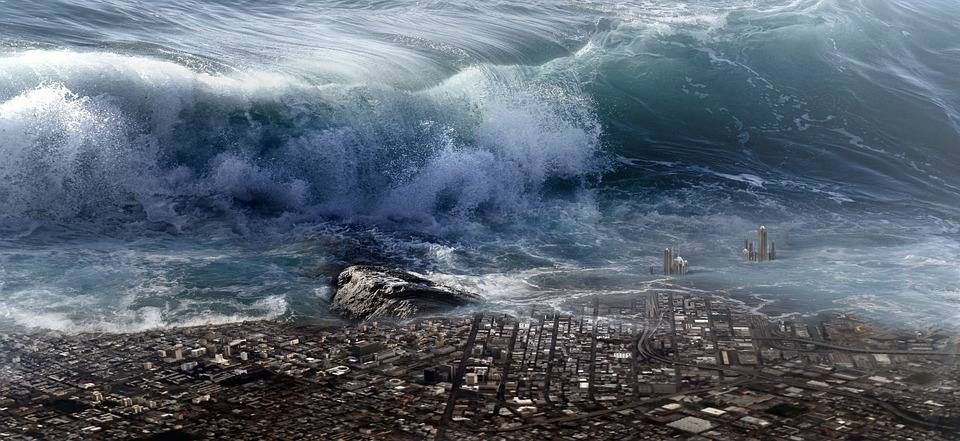

Big Wave Surfing

The biggest waves in the world
- when your mom jumps in the water
- Nazaré, Portugal
- Maui, Hawaii
- Tahiti, French Polynesia
- Tasmania, Australia
- Half Moon Bay, California
The biggest waves in the world

Big wave surfing is a discipline within surfing in which experienced surfers paddle into, or are towed into,
waves which are at least 20 feet (6.2 m) high, on surf boards known as "guns" or towboards.
Sizes of the board needed to successfully surf these waves vary by the size of the wave as well as the
technique the surfer uses to reach the wave.
A larger, longer board allows a rider to paddle fast enough to
catch the wave and has the advantage of being more stable, but it also limits maneuverability and surfing speed.
In 1992, big wave surfers such as Laird Hamilton and Darrick Doerner introduced a cross over sport called tow-in
surfing.
While many riders still participate in both sports, they remain very distinct activities.
This type of surfing involves being towed into massive waves by jet ski, allowing for the speed needed to
successfully ride.
Tow in surfing also revolutionized board size, allowing surfers to trade in their unwieldy 12 ft.
boards in favor of light, 7 ft boards that allowed for more speed and easier maneuverability in waves over
30 ft (10 meters).
By the end of the 1990s, tow in surfing allowed surfers to ride waves exceeding 50 ft (15 meters).